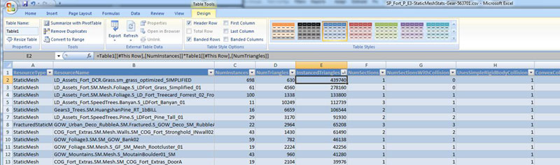

UDN
Search public documentation:
ContentProfilingHome
日本語訳
中国翻译
한국어
Interested in the Unreal Engine?
Visit the Unreal Technology site.
Looking for jobs and company info?
Check out the Epic games site.
Questions about support via UDN?
Contact the UDN Staff
中国翻译
한국어
Interested in the Unreal Engine?
Visit the Unreal Technology site.
Looking for jobs and company info?
Check out the Epic games site.
Questions about support via UDN?
Contact the UDN Staff
UE3 Home > Performance, Profiling, and Optimization > Content Profiling and Optimization
Content Profiling and Optimization
- Content Profiling and Optimization
Overview
Example Profiling and Optimization Process
Guided Content Optimization for Gears 3
The content optimization process being employed for Gears of War 3 was presented at the East Coast Game Conference. Slides for this presentation are available here.Content Optimization Workflow for Gears 2
- QA plays through entire game, takes PIX GPU captures whenever GPU time is above 33ms, trying to capture unique scenarios (not 10 captures of the same area)
- Programmers look through GPU captures
- Identify slow but low visual impact cases
- Ideally find enough potential optimizations that if they were all implemented, the scene would be < 33ms
- Use detailed draw event information to quickly identify what each draw call is in the editor
- Recorded Actor name, Resource name (static mesh, particle emitter, etc), Material name
- Provide LD's with suggestions on what to change, with clear directions and screenshots
- LD's and artists decide which optimizations are worthwhile, make content changes
- This ensures that art is responsible for quality decisions
- Repeat steps 1-3 as needed.
General Commandlets
Analyze Referenced Content
Knowing what a map references is vital to making certain that we are getting the biggest "bang for the cost". Additionally, knowing what the "biggest bang for the cost" in terms of optimization time spent across the entire game is vital! Being able to see changes over time is also great. And being able to use excel to make secondary spreadsheets and easily send the data around is also a requirement. The output from AnalyzeReferencedContentCommandlet does that! Usage To use the commandlet, simply run the following:GAMENAME AnalyzeReferencedContent MAPNAMES
This will result in a number of .csv files being create with the contents of those maps. Both on a per map basis and on a global basis.
From that you want to look at the data and find outliers, the most expensive objects, objects used the most, and optimize those.
Examples
- Looking at the StaticMesh .csv: Look for any static meshes that are used only once or twice. If those meshes are not a hero piece then they can usually be removed from the level / replaced with a more commonly used object with no impact. What happens is that they get placed in the level to add some visual uniqueness, but when you look at the level as a whole they are not needed (especially for the cost)
- Looking at the StaticMesh .csv, find the biggest memory costing objects. How many are used? Can we optimize the object?
- Looking at the summary .csv, we can calculate the total number of "instanced triangles" across the entire game BY multiplying columns NumInstances by NumTriangles into a new column called "InstancedTriangles" for specific StaticMeshes. Sorting on that "InstancedTriangles" column we can see the meshes that are accounting for the most triangles across the entire game. Optimizing them will usually give us the biggest return on the cost of optimizing them. (e.g. A small shrubbery is used ALL over the place in most every level. Optimizing that is going to get a lot more value than a really expensive fence mesh that is used in a few levels only.) (Click for full size) 
- Looking at the SoundNodeWaves .csv we can sort by the size of the SoundNodeWaves and see that there is one ambient sound that is 4x as expensive as the others. We want to find out why that is so expensive :-)
- Looking at the SoundNodeWaves .csv we see that there are 10 BirdCall SoundNodeWaves referenced. We can probably reduce the variety and not notice the difference.
Content Audit
The Content Audit Commandlet analyzes the content actively being used in the game and finds assets which might be considered "questionable" based on a predetermined set of rules. These rules can be designed to ensure content is being used efficiently, that properties of the content item which absolutely need to be set are set, etc. The Content Audit Commandlet page outlines the use of this commandlet in more detail.Content Comparison
The Content Comparison Commandlet analyzes the content actively being used in the game and provides comparisons between assets of similar types or classes. This allows you to make sure that there are no assets being used which are much more costly than they should be for the type of asset it is. The Content Comaprison Commandlet page outlines the use of this commandlet in more detail.Fixup Redirects
The Fixup Redirects Commandlet iterates through all the packages and makes sure all references are pointing directly to the actual asset and not to a redirector in another package. This keeps content from be loaded at times when it is not being used and should otherwise not be loaded. Information on using this commandlet to keep content references cleaned up can be found on the FixUp Redirects Commandlet page.General Browsers and Tools
Primitive Stats Browser
The Primitive Stats Browser gives a detailed breakdown of the geometry assets used in the level allowing designers to determine which assets may either need to be removed or modified by the art team to be more efficient. What follows is a description of the columns in the Primitive Stats Browser (formerly Static Mesh Stats Browser):- Type - Type of the resource, either skeletal mesh, static mesh, terrain or BSP (model)
- Count - Number of instances of that mesh in the level.
- Triangles - Triangle count per instance.
- Resource Size - Size of resource in KByte as reported by "view resource usage", only relevant for static and skeletal meshes
- Lights (avg LM/ other/ total) - Average number of lightmapped (LM), non lightmapped (other) and total lights affecting each instance.
- Obj/ Light cost - The object/ light interaction cost. This number indicates how many times this static mesh is going to be re-rendered for lighting purposes. It is the number of non-lightmapped lights times the total sections count of all instances. Lightmaps are not included in this number, as they are rendered as part of the emissive pass and are therefore can considered "free".
- Triangle cost - The number of triangles that need to be rendered for lighting purposes. This number excludes the z-prepass, emissive and lightmaps as those are constant overhead regardless of the number of lights.
- Lightmap - The amount of memory used by lightmap data.
- Shadowmap - The amount of memory used by shadowmap data.
- LM Res - The average lightmap resolution per instance.
- Sections - The number of sections this mesh has.
- Radius (min/max/avg) - Min/max/average radius of the bounding box for each instance of the mesh.
Static Meshes
Mesh Simplification Tool
The Mesh Simplification Tool allows you to reduce the geometric complexity of static mesh assets on a per-level basis. It can create a simplified copy of a mesh by parametrically reducing the triangle count, and then storing the mesh inside your level's package. It can also replace references to a high resolution mesh for all actors in the level, and help to maintain the simplified meshes over time. In short, a level designer can use this tool to quickly reduce a map's memory footprint and improve render times, with some trade-off in visual quality. Please see the Mesh Simplification Tool page for complete details over using this tool.Animations
bShouldBakeAndPrune (CL 259515) in InterpData, helps in this situation. It creates new AnimSet for the level and duplicates only the animations that are used by the level and re-links the reference. If the AnimSet is cooked/loaded anyway, then this flag needs to be off because it will duplicate the the same animation. This needs to be used if the AnimSet you're baking and pruning doesn't have to be loaded by the level. The flag can be globally disabled by setting the bBakeAndPruneDuringCook value to FALSE in the Cooker.MatineeOptions section of *Editor.ini.
In DefaultEditor.ini:
[Cooker.MatineeOptions] bBakeAndPruneDuringCook=false
Animation Compression
Animation Compression is a big part of saving animation memory. Unreal Engine 3 only works with compressed animations; however, there are several algorithms available which can result in different amounts of saving versus loss of visual fidelity. Choosing the right compression technique for each animation can have a large impact in the amount of memory saved. See the Animation Compression page for more information on the available compression algorithms and how to apply them to animations.Trace Anim Usage
Specific Animations are stored in AnimSets. When an AnimSet is referenced ALL of the animations inside that Animset are loaded. Often for organizational sanity AnimSets will have lots of animations for a specific activity (e.g. Walking). The issue is that some of the animations might not EVER be used. And if they are not ever used they are just taking up memory unfairly. We want to find them and remove them! Run the TRACEANIMUSAGE console command. This will show:- What animation has not been used
- What animation is most visible to player during the gameplay
Materials
- Try and limit the amount of Dependent Texture reads, this means modifying UVs with a texture, such as BumpOffset.
- Use Material Instancing, and use StaticSwitchParameters for expensive effects so that they can be toggled on/off easier to make performance tradeoffs.
- Consider removing specular from materials that do not have very much specular. This removes a significant amount of pixel shader instructions and in many cases is not noticeable.
- Try and limit the number of texture lookups in each material, the more texture lookups the longer it will take the GPU to get the textures it needs.
- Instruction count
- Watch usage flags - control number of shaders per material
Textures
- Check STAT STREAMING and streaming fudge factor. If this number is at 1.0 then you have nothing to worry about, anything higher than 1.0 means that the textures do not fit and some of them will be blurry.
- Use LISTTEXTURES to see what is loaded. This will spit out a list of textures that are loaded into the log. This information can be copied into excel, and automatically organized into rows/columns by pressing the "Text to Columns" button (under Data), and choosing Delimited->Comma-> finish. Then press sort to allow you to sort each row by ascending or descending order.
- Once you have a listtextures output into excel, sorting by DESCENDING in the "Current Size" row, and you can use that to start analyzing the worst-case-offenders..... the textures that are taking up the most memory.
Texture Optimization Techniques
Proper planning and the use of several tools provided in Unreal Engine 3 can help optimizing the amount of memory and disk space taken up by textures. Some tricks and techniques are detailed on the Texture Optimization Techniques page.Set Texture LODGroup
The Set Texture LODGroup Commandlet analyzes every texture and determines whether the current LODGroup of the texture is appropriate given the type of texture, and sets the LODGroup to the correct group if not. Having textures with incorrect LODGroup settings can lead to the resources of the texture pool not being allocated properly. The Set Texture LODGroup Commandlet page explains the use of this commandlet.Find Duplicate Textures
Over time people will duplicate textures to maybe make a few changes, use them in a different way, or mistakenly duplicate them. Usually the changes are small enough that they are not noticeable or were reverted after trying them out. But those textures are still around and now other people have used them in materials. So you can load up a level and have a number of the same exact texture in memory! This is obviously a situation that needs to be avoided. The Find Duplicated Textures commandlet provides a method of finding these duplicate textures so that they can be addressed. To run the Find Duplicate Textures commandlet, run the following from the command line:GAMENAME FindDuplicateTexturesCommandlet
This will list out all of the Duplicate textures in your game content.
NOTE: You will want to work with a programmer to look at the various options this commandlet can do. Specifically look at: UnPackageUtilities.cpp UFindDuplicateTexturesCommandlet::Startup()
Particle Systems
- Disable collision on minor stuff (in UT the Enforcer weapon sparks used collision!).
- Avoid overdraw.
- Use PIX and VIEWMODE SHADERCOMPLEXITY.
- Use STAT PARTICLES to see count.
- Manually set bounding boxes for common effects or large ones.
- Ensure Editor generated max active counts are sane.
- See the Particle System Reference page for more details
- Use MEMORYSPLIT, it will show how much particle data is currently loaded as Active and how much is could be loaded as Peak (the max possible memory that could be allocated to particles at one time).
Audio and Sounds
- Ensure that multiple music tracks aren't being used unless they are absolutely necessary. It's a good idea to keep music tracks in their own streaming maps so that they can be streamed in and out when they are needed(this will not affect performance, but it will affect the overall level budget).
- Check budget via STAT AUDIO, STAT MEMORY.
- Use LISTSOUNDS to see what is the currently loaded sounds - displays waves stored on a per group basis so you can see what types of sounds take up the most memory.
- LISTWAVES lists the currently playing sounds (PC only).
- LISTAUDIOCOMPONENTS lists the currently considered sounds.

{kind=link}
{kind=link}